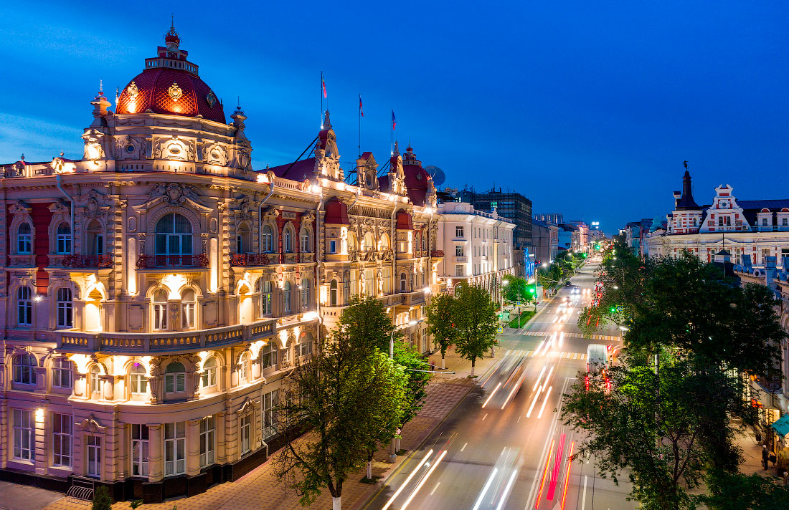

Ростов Великий

Ростов Великий — один из древнейших русских городов, когда-то равный по славе и богатству Новгороду и Киеву, был признанным духовным и культурным центром в те времена, когда и Москвы еще не существовало. Этот город впервые упоминается в «Повести временных лет» под 862 годом, именно с этой даты ведется официальное исчисление возраста Ростова. Ростов Великий раскинулся на западном берегу озера Неро. Благодаря богатой истории, город включен в знаменитый туристический маршрут Золотое кольцо России. Ростов Великий сквозь века пронес свою красоту и величие, сохранив ее в сотнях уникальных архитектурных памятников. На территории города имеется 326 памятников культуры, треть из которых являются памятниками федерального значения. Не зря поездку в Ростов (не путать с Ростовом-на-Дону) сравнивают с путешествием на машине времени.
Достопримечательности
Государственный музей-заповедник «Ростовский кремль»
Ростовский кремль — главная достопримечательность города, находится в исторической части города на берегу озера Неро. Он никогда не был оборонительным сооружением, однако построен в традициях русского оборонного строительства, является памятником русской военной архитектуры и с 1998 года входит в предварительный список Всемирного наследия ЮНЕСКО.


Успенский собор.
Успенский собор, расположенный на Соборной площади Ростовского кремля, — старейшее здание города, он построен в 1508–1512 годах на месте предыдущих храмов XII–XIII веков. До 1788 года это был кафедральный собор Ростово-Ярославской епархии и усыпальница ростовских князей и архиереев. Здесь покоятся мощи митрополита Ионы, создателя Ростовского кремля, а также первого ростовского удельного князя Василько Константиновича.
Митрополичий сад
Митрополичий сад — неотъемлемая часть архиерейской резиденции. Он был создан при митрополите Ионе в конце XVII века. В конце 1990-х годов сад был реконструирован и сейчас соответствует по своей планировке и видовому составу насаждений саду конца XVII века. В саду выращиваются яблони в основном традиционных сортов среднерусской полосы: грушовка, белый налив, осеннее полосатое, боровинка, серый анис и антоновка.
В саду есть двухэтажный садовый домик, называвшийся в старину Палаткой Митрополичьего сада. Сейчас здесь работает чайная, где можно попробовать душистые сборы из трав.
Спасо-Яковлевский Дмитриевский монастырь
Спасо-Яковлевский Дмитриевский монастырь был основан, по преданию, в конце XIV века ростовским епископом Иаковом, который в нем и был похоронен. Монастырь является центром почитания двух святых — святителя Иакова Ростовского и святителя Дмитрия Ростовского.
Колокольня, жилые корпуса и ограда монастыря в стиле классицизма построены в конце XVIII века. К монастырю относится и стоящий на территории, примыкающей к монастырю, соборный храм Спаса Преображения, построенный в 1680-е годы и ранее принадлежавший Спасскому монастырю.
Авраамиев Богоявленский монастырь
Авраамиев Богоявленский монастырь — один из древнейших монастырей России, в летописи впервые он упоминается в XIII веке, но основан был, по преданию, в 1080 году преподобным Авраамием Ростовским на месте поклонения языческому идолу Велесу. Главный храм монастыря — Богоявленский собор, построен по повелению царя Ивана Грозного в 1554–1555 годах. В соборе сохранились росписи 1736 года.
Троице-Сергиев Варницкий монастырь
По преданию, мужской Троице-Сергиев Варницкий монастырь, расположенный в нескольких километрах от Ростова, был основан в 1427 году на месте рождения святого Сергия Радонежского. Монастырь был закрыт в 1919 году, а в последующие годы варварски разрушен практически полностью, Троицкий собор с колокольней взорван. Уцелела только Введенская церковь, построенная в 1826–1828 годы, и несколько служебных строений.
Поклонный крест и Владимирская часовня
Согласно летописям, жителей Ростова крестил сам князь Владимир Святославич, который в 991 году прибыл на берега озера Неро с дружиной и греческим митрополитом Михаилом.В 2015 году, в 1000-летнюю годовщину кончины равноапостольного князя Владимира — крестителя Руси, на берегу озера Неро установили поклонный крест из гранита высотой почти четыре метра, а рядом построили часовню во имя святого равноапостольного великого князя Владимира.
Церковь Вознесения Господня
Церковь Вознесения Господня или церковь Исидора Блаженного на валах, как ее часто называют, — одна из древнейших церквей Ростова Великого. Она построена в 1566 году по повелению царя Ивана Грозного над местом захоронения святого юродивого Исидора Блаженного. Вскоре над этим местом построили деревянных храм в честь Вознесения Господня, так как день погребения Исидора приходился в 1474 году на этот праздник, а почти через столетие церковь заменили на каменную.
Озеро Неро
Ростов Великий стоит на берегу озера Неро, самого большого озера Ярославской области, длина береговой линии этого озера порядка 45 километров.У озера богатая история, первые люди на его берегах поселились около 4 тысяч лет до нашей эры. На южном берегу озера обнаружены остатки Сарского городища — укрепленного поселения VII — начала XI веков. Ученые считают, что здесь была столица древнего племени меря.Именно на озере Неро царь Петр Первый хотел построить свои первые корабли, но изучив озеро поближе, отказался от своей идеи и уехал в Переславль, на Плещеево озеро.
Музеи
Музей финифти
Ростов Великий славится своим кремлём и русским народным художественным промыслом, именуемым финифтью. Побывать в этом небольшом городке и не посетить Музей финифти — непростительная оплошность.Вся коллекция учреждения занимает одно помещение. В ней собраны предметы церковной утвари и иконы, датируемые ещё XVIII веком. Впрочем, экспонаты настолько яркие и насыщенные, что их можно спутать с более поздними версиями.
Дом творчества «Хорс»
Интересное место в Ростове — дом творчества «Хорс», основанный в 1995 году. Он располагается в деревянном строении, возведенном в конце XIX в. Здесь наряду с выставками современного искусства, экспонируется коллекция художественной эмали (финифти) и осуществляет работу домашний музей русского быта с интерьерами XIX–XX вв. Здесь действует художественная мастерская и проводятся мастер-классы по искусству росписи финифтью.